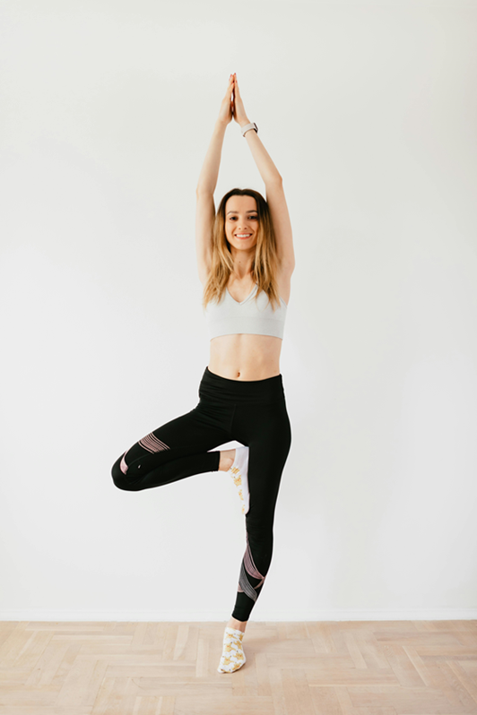
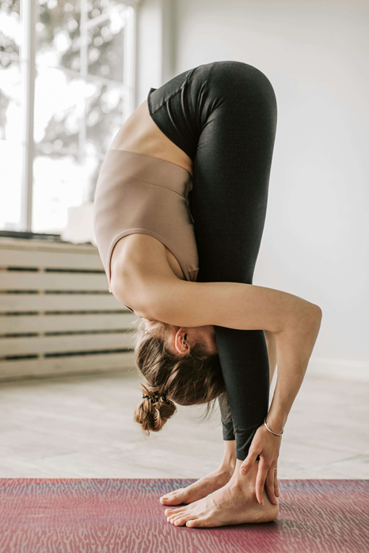
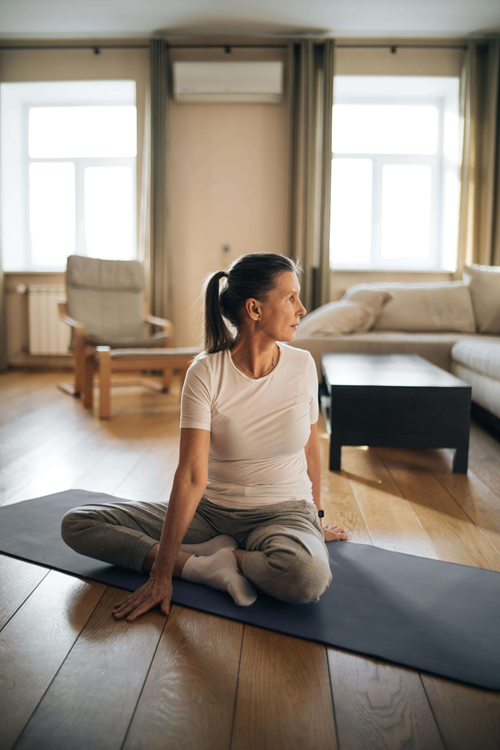

Great, that's the first step.
Yoga, itself has been around for over 5000 years* with many poses, variations and teaching style.
With this in mind, 3 poses have been selected that we feel would be for beneficial individuals working remotely. They are aimed to help relieve back, neck and leg pain and relieve stress that can potentially come with work.
The Tree
- Start by sitting legs crossed on a firm but comfortable place (yoga matt recommended)
- Sit with your neck, back and arms straight.
- Keeping your back and neck straight, place your right arm over your left knee.
- Allow your right arm to go only as far as you are able to. which will stretch your back and neck.
- Hold your breath for 5 to 10 seconds and return to sitting straight.
- When ready, repeat with left arm over right knee.
- Hold for as long as comfortable (up to a minute).
- Repeat as many times as you feel comfortable doing.

The forward Fold
- Similiar to the tree, stand up with your arms by your side, feet close together.
- Place your arms above your head and inhale.
- Keeping your legs straight, lower your arms touching your toes/floor
- Keep your thighs firm in line with your ankles.
- Allow neck to relax, heading moving freely.
- Exhaling in and out in this position will allow your spine to stretch relieving tension.
- Repeat as many times as you feel comfortable doing.

The Seated Twist
- Start by sitting legs crossed on a firm but comfortable place (yoga matt recommended)
- Sit with your neck, back and arms straight.
- Keeping your back and neck straight, place your right arm over your left knee.
- Allow your right arm to go only as far as you are able to. which will stretch your back and neck.
- Hold your breath for 5 to 10 seconds and return to sitting straight.
- When ready, repeat with left arm over right knee.
- Hold for as long as comfortable (up to a minute).
- Repeat as many times as you feel comfortable doing.
